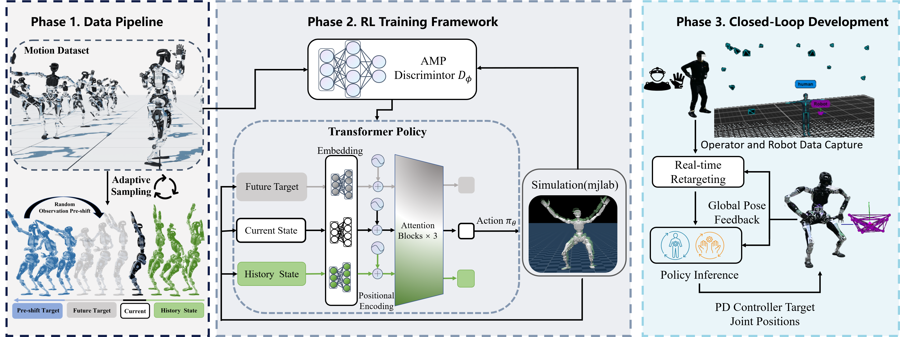

Long-horizon whole-body humanoid teleoperation remains challenging due to accumulated global pose drift, particularly on full-sized humanoids. Although recent whole-body tracking methods enable agile and coordinated motions, they typically operate in the robot's local frame, leading to drift and instability during extended execution. We propose CLOT, a closed-loop real-time teleoperation system that utilizes localization feedback to synchronize human motion inputs with the robot's global pose. Directly imposing global tracking rewards in reinforcement learning often leads to aggressive and brittle corrections. We therefore introduce Observation Pre-shift, a data-driven randomization strategy that decouples observed reference previews from reward-aligned targets, thereby encouraging smooth global recovery. CLOT enables drift-free, long-horizon teleoperation on a full-sized 31-DoF humanoid. By integrating a Transformer-based policy trained on 20 hours of curated human motion data, the proposed framework exhibits high-precision tracking, stable loco-manipulation, and robust disturbance rejection.